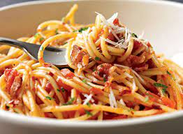

Spaghetti Recipe

Description:
This spaghetti recipe is a simple but super delicious and easy to make even for beginners. Must try.
Ingredients:
- 2 lbs Spaghetti
- 2 tbsp Salt
- 36 ounces Water about 1 liter
Spaghetti sauce ingredients:
- 1 big bottle banana ketchup
- 1 big can Tomato sauce approximately 4 cups
- ½ cup Tomato Paste
- 1 tsp Garlic minced
- 1 ½ lbs Ground Beef
- 4 pcs Hotdogs sliced
- 2 to 4 tablespoons brown Sugar
- 1 medium sized Onion diced
- Cheddar Cheese
- 4 tbsp Cooking Oil
Steps:
- In a large pot, pour the water in and bring to a boil
- Put-in the salt
- Add the Spaghetti Noodles and cook until tender (see package for cooking time) then set aside
- Using a separate pan, saute the garlic and onions
- Put-in the round meat and let cook for 5 minutes
- Add the hotdogs and cook for 2 minutes
- Put-in the tomato sauce, banana catsup, tomato paste, and brown sugar then simmer for 15 to 20 minutes
- Place the sauce on top of the cooked noodles and add some cheese
- Serve hot. Share and Enjoy!
Home